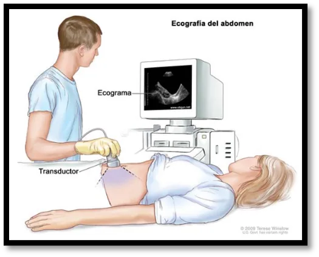

2.1
Ecografía abdominal
¿Qué es?
Es un estudio de imagen no invasivo que utiliza ondas de ultrasonido para visualizar los órganos y estructuras internas del abdomen, sin uso de radiación ni necesidad de contraste en la mayoría de los casos.
Función
Permite obtener imágenes en tiempo real de los órganos abdominales para apoyar el diagnóstico médico, detectar alteraciones estructurales, guiar procedimientos (como biopsias o drenajes) y hacer seguimiento de enfermedades ya diagnosticadas.
¿Qué evalúa?
•Hígado: tamaño, tumores, quistes, esteatosis, cirrosis.
•Vesícula y vías biliares: cálculos (litiasis), inflamación (colecistitis).
•Páncreas: inflamación, tumores, quistes.
•Riñones: cálculos, quistes, hidronefrosis, tamaño.
•Bazo: tamaño (esplenomegalia), lesiones.
•Vejiga: contenido, paredes, cálculos.
•Aorta abdominal: aneurismas.
•Líquido libre en cavidad abdominal (ascitis).
•En mujeres, a veces incluye útero y ovarios (según el tipo de estudio).
Intervenciones de enfermería
Antes
- Verificar preparación previa: ayuno de 6-8 horas (para evitar gas y mejorar la visualización, especialmente de vesícula y páncreas).
- Explicar el procedimiento al paciente para reducir la ansiedad.
- Confirmar que el paciente no haya fumado ni masticado chicle.
Durante
- Acompañar y posicionar al paciente.
- Brindar apoyo emocional y mantener su privacidad y comodidad.
- Colaborar con el médico o técnico en el manejo del gel y la sonda si es necesario.
Después
- Retirar el exceso de gel de la piel del paciente.
- Verificar que el paciente se encuentre estable y sin molestias.
- Informar sobre la reanudación de su dieta habitual y coordinar la entrega de resultados.